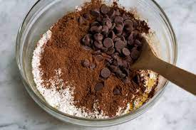
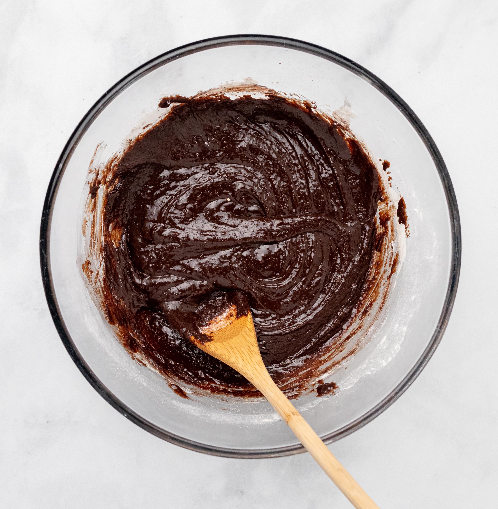

Brownies

Let`s get started!
In this recipe we will prepare super fudgy brownies. Below you can see the list of ingredients followed by a step by step description
We will mix the dry ingredients and wet ingredients together first and then combine them together
ingredients
- Dark Chocolate
- Butter
- Eggs
- Brown Sugar
- Granulated Sugar
- Vanilla
- Flour
- Cocoa
- Salt

Instructions
- Start by mixing the white, brown sugar, salt and vanilla in a mixing bowl
- Once everything is incorporated start adding the eggs one by one while mixing everything with a whisker
- Chop the chocolate in small bits to melt it easier, you can pop it in the microwave together with the butter and blast it with 10 second intervals and mixing between the blasts
- When the chocolate, butter mix is liquid carefully add and fold it into the mixture in the bowl
- Finally shiv the cocoa and flour together into the mixture and fold it in

This is it our mixture is ready, now we need to pour it into a baking tray which we line with baking paper. Baking paper will help us to remove the brownie from the tray without sticking
Pop the tray into the oven which we warmed up to 180 degrees beforehand and let it sit there for 25-30 minutes